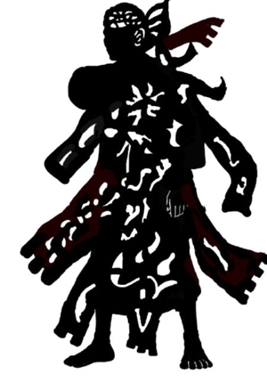
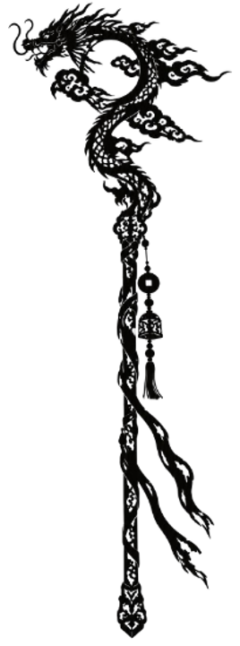
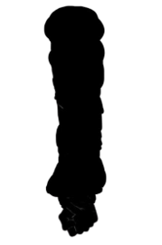

Move the mouse — Elder 2 follows
X: 0 Y: 0
ELDER 2 PUPPET MODE
MOVEMENT
W A S D
– Walk / steer
R
– Reverse direction
1
– Dramatic entrance
5
– Dramatic exit
ARM
Q / E
– Raise / lower arm
DISPLAY
4
– Toggle aura
0
– Vanish / return
B
– Background / transparent
M
– Hide/show commands
9
– Hide/show bottom text
P
– Exit puppet mode